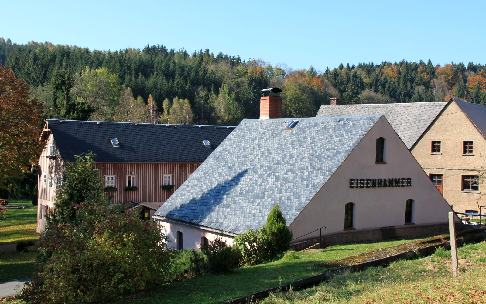
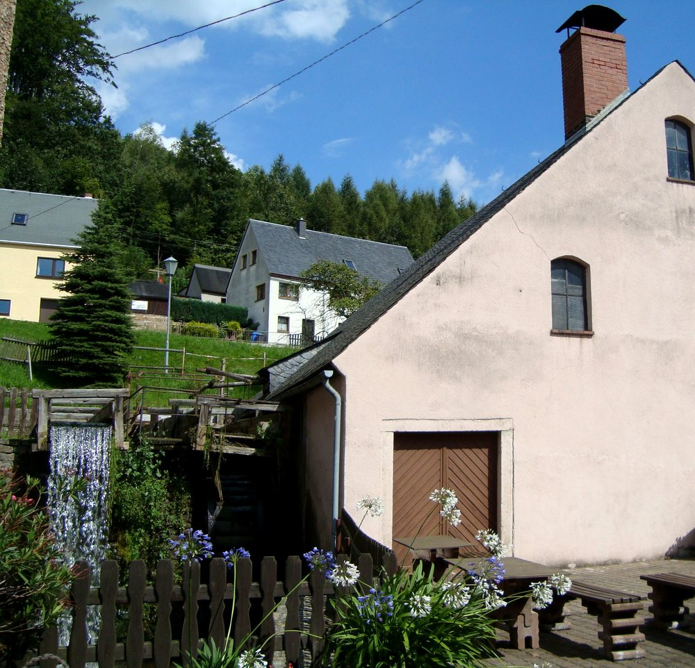

Technisches Denkmal Dorfchemnitz im Erzgebirge
Wasser treibt. Eiche dreht. Eisen gibt nach.
Ein Hammerwerk am Chemnitzbach, dessen Betriebsrecht 1365 zum ersten Mal beurkundet ist. Der Bach treibt die Räder bis heute — der Schwanzhammer schlägt vor Publikum.
Besuch planen- Öffnungszeiten
- Do – So, 13 – 16 UhrMai bis Oktober · Saison Mai bis Oktober
- Eintritt
- 5,00 € · ermäßigt 3,00 €mit Schauschmieden 8,00 € / 4,00 €
- Führung
- Eine Stunde, im Eintritt enthaltenHammer und Blasebalg laufen dabei
- Hier finden Sie uns
- Hauptstraße 11, 09619 DorfchemnitzBus und Parkplatz direkt am Gelände

01 — Antrieb
Vierhundertzwanzig Meter Anlauf
Bevor hier irgendetwas geschmiedet wird, muss das Wasser einen Umweg gehen.
Ein Hammergraben zweigt den Chemnitzbach ab und führt ihn 420 Meter am Hang entlang, bis er hoch genug über dem Hof liegt. Dann fällt er auf ein oberschlächtiges Rad von vier Metern Durchmesser. Das ist die ganze Energiequelle des Werks: etwa fünf Pferdestärken, jeden Tag, ohne Rechnung.
Ein zweites, kleineres Rad hat nur eine Aufgabe — es zieht den Blasebalg, der das Schmiedefeuer auf Temperatur bringt.
- Hammergraben420Meter
- Wasserrad, oberschlächtig4Meter Ø
- Leistung des Rades3,6kW ≈ 5 PS
02 — Übertragung
Neun Meter Eiche,
zwei Hämmer
Vom Rad führt eine einzige eichene Daumenwelle quer durch das Haus. Sie hebt die Hämmer — fallen lassen sie sich selbst.

Die Welle ist über neun Meter lang und trägt die Daumen, die unter die Hammerstiele greifen. Sechzig- bis hundertmal in der Minute geht das im Vollbetrieb — der Boden nimmt es auf, die Wand gibt es zurück. Wer im Hammerhaus steht, hört den Takt eher, als dass er ihn sieht.
Beide Schwanzhämmer stehen im technischen Zustand von 1844, als der ausgediente Hochofen zur Schmiede umgebaut wurde. Sie sind vollständig und funktionsfähig erhalten.
Mit auswechselbarem halbkugelförmigem Hammerkopf und passendem Amboss ließen sich hier auch Kugeln schmieden — Mahlkugeln für die Zinnaufbereitung in Altenberg und Zinnwald.
Breithammer
300 kg Gewicht, 500 kp Schlagkraft
60Schläge je Minute
Streckhammer
150 kg Gewicht, 250 kp Schlagkraft
100Schläge je Minute
03 — Dauer
Sechs Jahrhunderte
am selben Bach
Das Gründungsjahr ist nicht überliefert. Die erste Urkunde über den Betrieb ist es.
-
Die Familie von Hartitzsch erhält das Recht, den Hammer zu betreiben
Nach Angabe des Museums die erste Erwähnung. Wann das Werk entstand, ist nicht bekannt.
-
Kurfürst August erteilt die Konzession
Der Dresdner Bürgermeister Hans Hase darf Eisenhammer und Eisenerzgrube errichten und betreiben — nachdem er dem Kurfürsten Proben verhüttbaren Erzes vorgelegt hatte.
-
Aus dem Hochofen wird eine Schmiede
Die Erze im Wolfsgrund sind erschöpft. Der Hammer verarbeitet fortan Roheisen aus Mittelschmiedeberg. In diesem Zustand steht die Anlage bis heute.
-
Der letzte Schlag
Dampfhämmer, die abseitige Lage und das Umladen in Mulda von der Normal- auf die Schmalspurbahn machen das Werk unrentabel. In der Weltwirtschaftskrise wird der Betrieb eingestellt.
-
Am 1. Mai öffnet die technische Schauanlage
1939 hatte die Gemeinde die Anlage gekauft, um sie zu erhalten. Krieg und Materialmangel verzögerten die Arbeiten um dreißig Jahre.
04 — Bestand
Vier von einst vielen
Im Erzgebirge klapperten über Jahrhunderte Dutzende Hammerwerke an den Bächen. Funktionsfähig erhalten geblieben sind in Sachsen vier. Dorfchemnitz ist eines davon.
- Eisenhammer Dorfchemnitz
- Frohnauer Hammer
- „Althammer“ der Saigerhütte Grünthal
- Freibergsdorfer Hammerwerk
05 — Feuer
Wenn das Schmiedefeuer angeht
An vier Tagen im Jahr wird nicht nur vorgeführt, sondern gearbeitet: Schmiedegesellen am glühenden Eisen, mit etwas Glück der Schmiedemeister selbst.
- 25. Mai 2026 Deutscher Mühlentag jährlich am Pfingstmontag
- 10.–13. Juli 2026 Hammerfest — das Fest der Dorfchemnitzer Vereine jährlich am 2. Juliwochenende, vier Tage auf dem Festgelände
- 13. Sept. 2026 Tag des offenen Denkmals jährlich am 2. Sonntag im September
- 18. Okt. 2026 Tag des traditionellen Handwerks jährlich am 3. Sonntag im Oktober
Zu den besonderen Öffnungszeiten und Programmen an diesen Tagen gibt das Museum kurzfristig Auskunft — am schnellsten telefonisch.
06 — Besuch
Donnerstag bis Sonntag,
dreizehn bis sechzehn Uhr
Von Mai bis Oktober. Jede Besichtigung ist eine Führung von einer Stunde — Hammer und Blasebalg laufen dabei.
| Karte | Eintritt | mit Schauschmieden |
|---|---|---|
| Normal | 5,00 € | 8,00 € |
| Ermäßigt Kinder 7–14 Jahre, Schüler, Studenten, Schwerbeschädigte | 3,00 € | 4,00 € |
| Familienkarte 2 Erwachsene, ab 1 Kind | 10,00 € | 16,00 € |
| Kinder bis 6 Jahre | frei | frei |
Gruppen ab 25 Personen erhalten 10 % Rabatt — auf Anfrage. Führungen außerhalb der Öffnungszeiten und Schauschmieden werden für Besuchergruppen gern ermöglicht.
Anfahrt
- Hauptstraße 11, 09619 Dorfchemnitz — rund 300 m nach dem Ortseingang aus Richtung Mulda, rechte Straßenseite.
- Kostenlose Parkplätze, auch für Busse, direkt neben dem Gelände.
- Linienbushaltestelle „Dorfchemnitz Buchleite – Eisenhammer“ ebenfalls direkt daneben.
Achtung beim Navi: Manche Geräte führen zur Hauptstraße 11 im eingemeindeten Ortsteil Voigtsdorf. Richtig sind 50.77077, 13.43043 — oder die Adresse Buchleite 1 gegenüber.